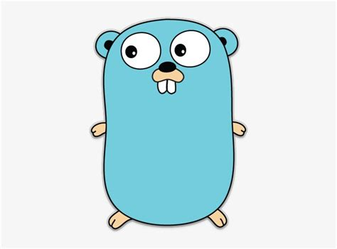

Go:

Sim esse é o mascote do GO, uma linguagem de programação compilada e de código aberto, ela é capaz de desenvolver backend, é ideal para serviços de redes e infraestrutura, criação de ferramentas DevOps, criação de CLI e utilitários, até mesmo criação de sistemas
Cloud, ela é usada em empresas de tecnologia que precisam do backend rápido e acessível, infraestrutura cloud computing, serviços de alta concorrência e até startups.